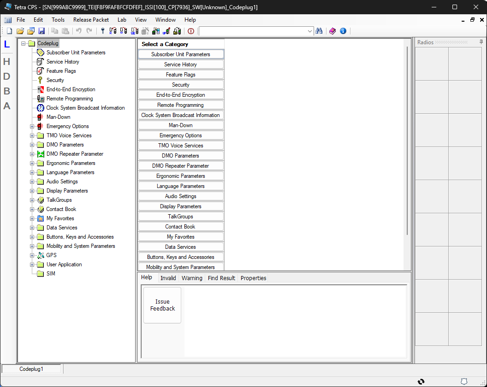
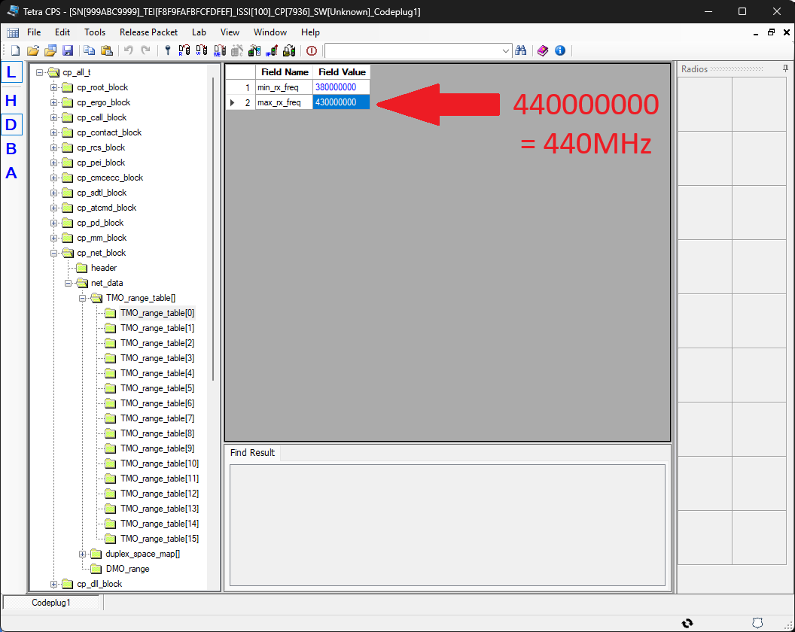
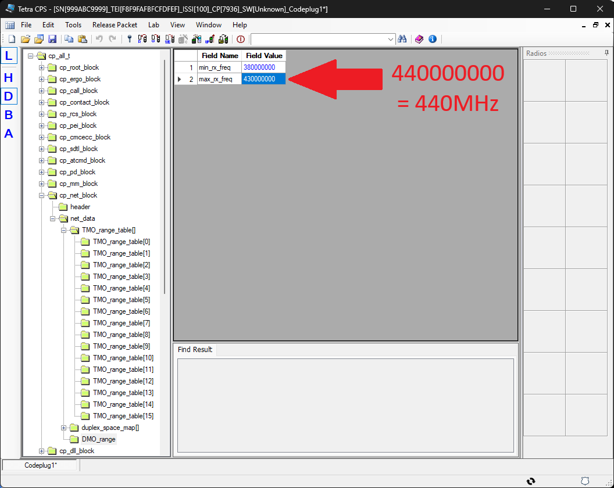
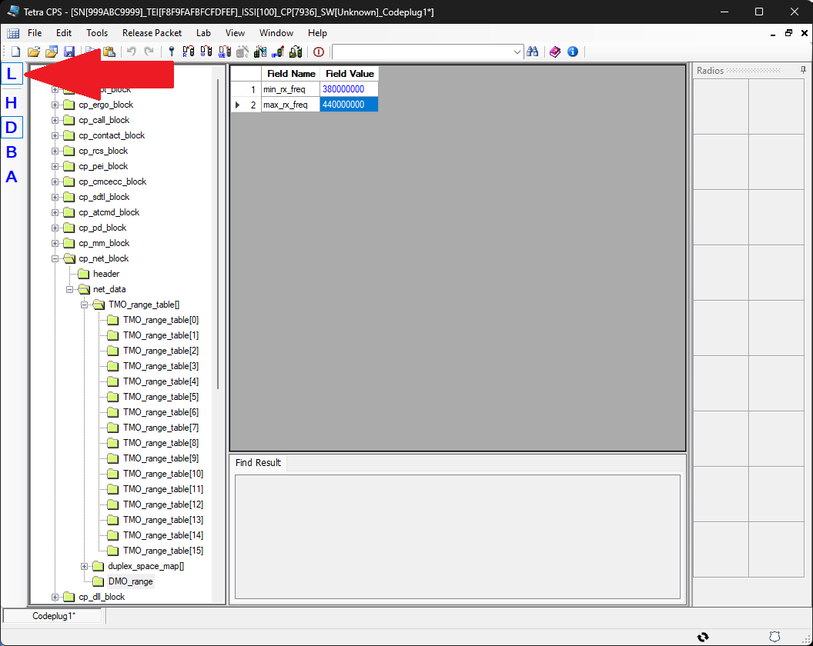
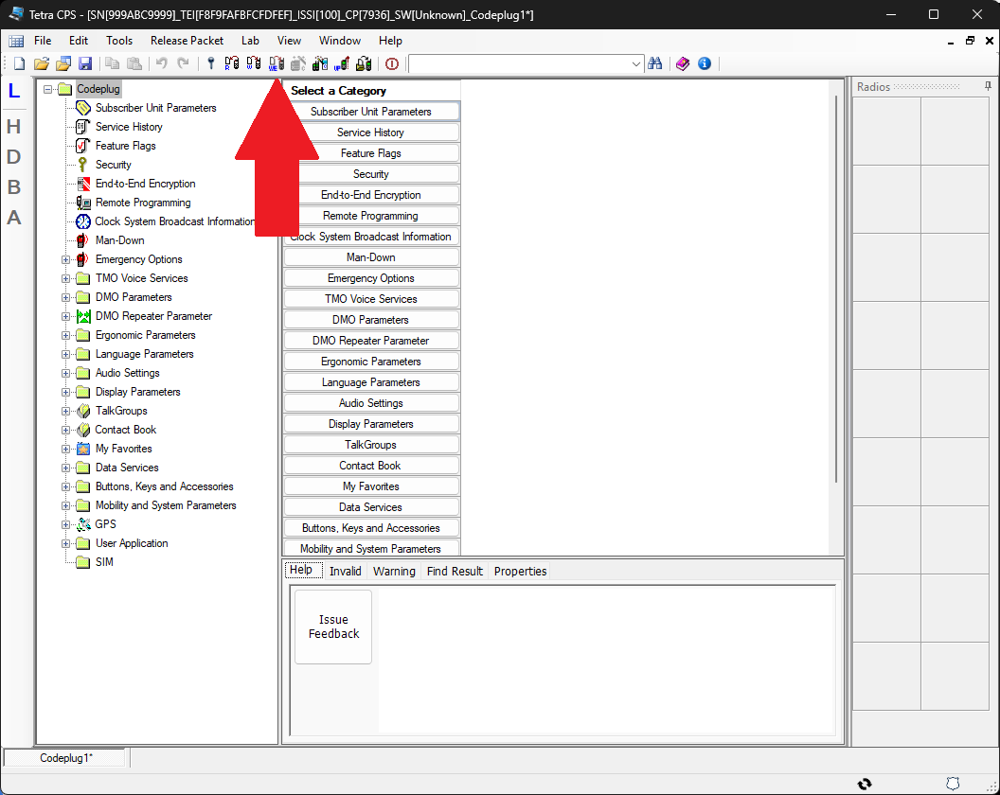

Frequenzerweiterung
Um die Motorola-TETRA-Geräte im Amateurfunkband (435 – 438 MHz) nutzen zu können, muss der Frequenzbereich in der CPS (Customer Programming Software) angepasst werden. Die folgende Anleitung zeigt die Schritte für die Frequenzerweiterung im Lab-Mode der CPS. Getestet wurde dies mit einem Motorola MTM800E und einem MTP850S.
Hinweis: Alle Angaben ohne Gewähr. Keine Haftung für Schäden an den Geräten. Die Erweiterung kann je nach CPS-Version leicht abweichen.
Frequenzerweiterung (DMO-/TMO-Range)
-
Codeplug öffnen – CPS starten und den vorhandenen Codeplug
laden oder aus dem Gerät auslesen.

-
Lab-Mode öffnen – Über das Menü View → Lab Mode
oder per Tastenkürzel den Lab-Mode aktivieren.

-
Auf Dezimal umschalten – Im Lab-Mode die Anzeige von
Hexadezimal auf Dezimal umstellen.

- Block „cp_net_block“ erweitern – In der Baumstruktur den Block cp_net_block aufklappen.
- Block „net_data“ erweitern – Unter cp_net_block den Block net_data aufklappen.
- Block „TMO_range_table[]“ erweitern – Unter net_data den Block TMO_range_table[] aufklappen.
-
max_rx_freq anpassen – Bei jedem der 16 Einträge unter
TMO_range_table[] den Wert
max_rx_freqvon 430000000 auf 440000000 ändern.
-
DMO-Range anpassen – Den Block DMO_range aufsuchen
und ebenfalls 430000000 durch 440000000
ersetzen.

-
Lab-Mode verlassen – Über View → Lab Mode den
Lab-Mode wieder deaktivieren. Dadurch werden die Änderungen validiert und
gespeichert.

-
Write Entire Codeplug – Den vollständigen Codeplug ins Gerät
schreiben. Write Codeplug reicht nicht – nur Write Entire
Codeplug überträgt die Range-Tables.
